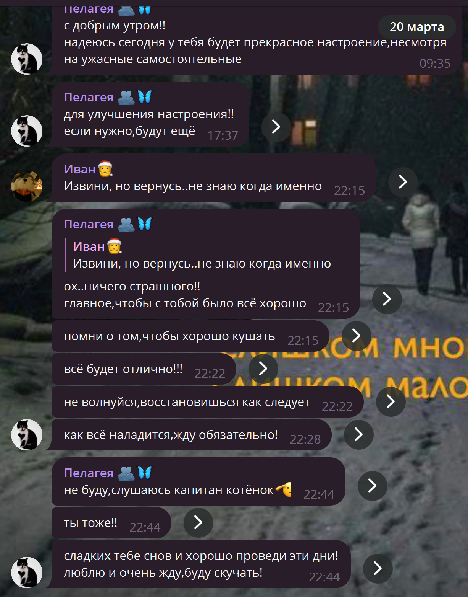
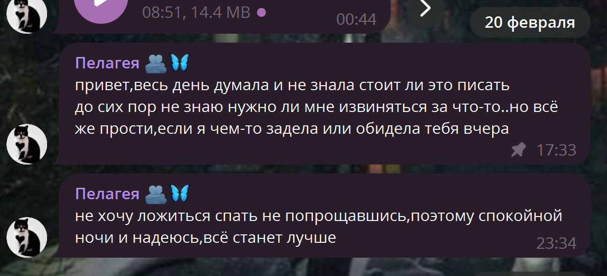
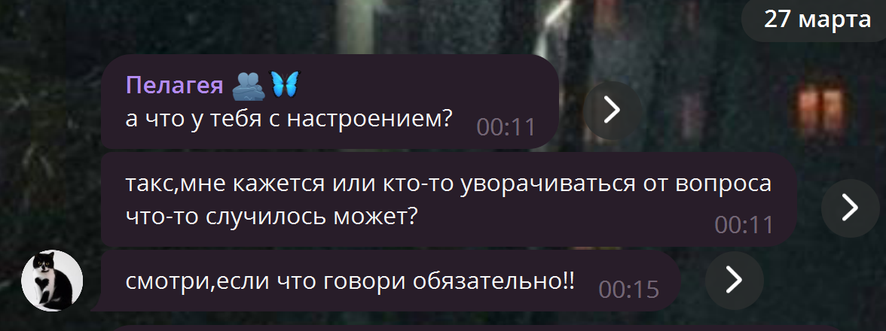
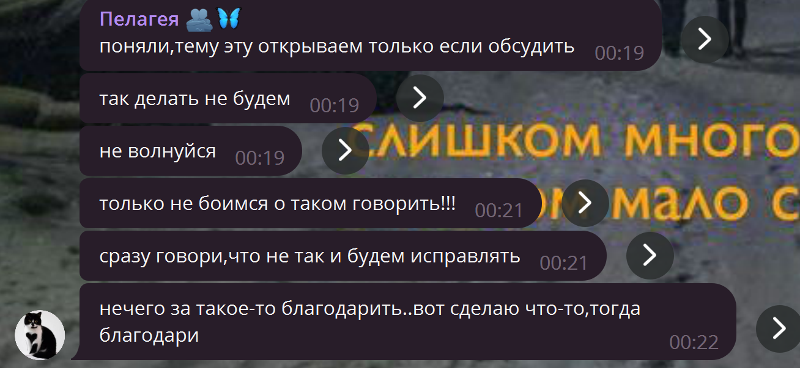
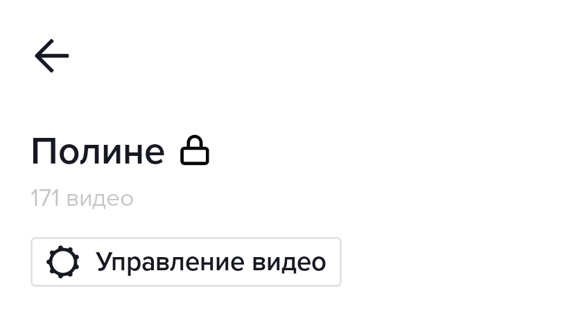

Откровения
Привет кошка!
Я полагаю тут будет практически ВСЁ что я хотел бы сказать. Слова поддержки и благодарности.
Собственно, ты и сама сейчас всё увидишь)
Приятного просмотра, Поля!
"Сегодня ровно неделя до того дня, как я презентую этот подарок тебе))
Откладывал конкретно этот раздел на конец так как нужно было собраться с мыслями и что-то придумать, так что надеюсь за это время тут наберётся приличное кол-во вещей о которых я хотел бы сказать.
Но, 100% всё самое интересное придёт в голову уже после))("
Я уверен в тебе
 В большинстве случаев я уверен что в той или инной ситуации ты меня поддержишь и спросишь как я. У меня могут быть очень плохие дни, отсутствие настрояния, желания писать и я могу переодические пропадать. Но ты всё равно напишешь что всё хорошо и нет ничего страшного.
Напишешь:"как всё наладится,жду обязательно!"
, "ох..ничего страшного!!главное,чтобы с тобой было всё хорошо" , "я дождусь!! всё равно должны лечь спать вместе" ,
"Восстанавливайся столько, сколько тебе нужно. Всё в порядке"
Я это очень ценю, правда. Это очень поднимает настроение.
Проверяешь телефон, а там Полина написала слова поддержки, это очень помогает, спасибо тебе за это.
Ты довольно сильно повлияла на мой стиль общенияй как в переписке, так и в жизни
Спустя какое-то время после начала нашего общения я перенял..даже не знаю как это назвать, особенности твоего общения.
Будь то использование восклицательного знака и вот этих скоробочек "((" когда дело касается не только чего-то грустного, но и милого
И куда же без "Плачу" и "Убила" когда дело касается чего-то приятного. Я был в шоке когда поймал себя на том, что начал использовать эти слова во время общения с другими людьми.
Справедливости ради я время от времени замечаю за тобой мои слова "Топаем" и "Ёмаё"))
В начале общения такого не замечал.
А ещё мне нравилость твоё "Божечки кошечки", - это очень мило.
Я очень благодарен тебе за это!
Мне очень приятно когда ты интересуешься моими планами на день, хотя время от времени мне кажется что они однообразны и ничего интересного там нет, но ты всё равно интересуешься ими.
А так же интересушься как мои успехи, поел ли я, как я себя чувствую и тд., приятно знать что ты переживаешь и заботишься обо мне.
Я очень благодарен тебе за это!
Засыпаем вместе
Мне очень приятно то, что мы засыпаем вместе. И я бы даже сказал что странно, ибо ты первый человек у которого получилось провернусь такое и заставить меня идти спать раньше, так что спасибо тебе. Не помню когда появилась сама идея, но всё-же она довольно хороша).
Сейчас увы эта традиция практически сошла на нет, но надеюсь в скорое время мы ее возобновим.
Порой у нас бывают небольшие разногласия ибо кто-то любит спорить, а кто-то стоять на своём), и в итоге мы цепляемся за это так как оба упёртые. Но, не смотря на это мы так или иначе приходим к чему-то, не боимся извиниться и закрыть этот вопрос.
Конкретно тут мы немного непорозумілися, но следующим вечером ты написала это. Спасибо тебе.
Знакомство
Я очень рад что на кануне нашего знакомства я решил вернуться в ДайВинчик и от скуки поискать людей для общения. В итоге найдя тебя))
Я ещё ни разу не жалел об этом. Не помню с какими мслями я начинал общение, но помню что ты давала понять что я тебе интересен. Ночные переписки, кучу всего нового и интересного, примерно так прошёл первый месяц общения. Дальше общение 25/8 которое местами пропадало или уменьшалось, но мы смогли остаться на плаву и я этому рад. Дальше я начал вкидывать шутки по типу "Я до тебя когда-то доберусь"(так уж повелось что у нас всё начинается с шуток) и в итоге я всё-же добрался до тебя))
Ты первый интернет-друг с которым у меня получилось встретиться. В какой-то момент я думал: "А стоит ли это вообще делать и будет ли это уместно","Ждут ли меня там?", но как видишь всё всё-таки получилось)
Я очень благодарен тебе за твою поддержку, за то, что была рядом и была ЗА меня в тех или инных ситуациях. Ещё раз огромное тебе спасибо!
Кто бы мог подумать что очередное интернет-знакомство превратиться во что-то подобное и я найду человека на которого в каком-то смысле смогу положиться, смогу поделиться переживаниями хоть мне до сих пор тяжело это делать. Я нашёл человека с которым можно поговорить на любые темы и я надеюсь таких тем мы обсудим сотни, когда встретимся.
Кхм, к слову. Я хочу сделать кучу фоточек и видео с нашей встречи, я попросту не могу себе позволить не запечетлить эти моменты.
Посылки
Идея как обычно зародилась из-зашутки и реализовалась спонтанно. Однако это довольно интересный опыт))
Кто бы мог подумать что когда-то буду обмениваться посылками. Огромное тебе спасибо за старания и потраченное время, очень ценю и всё храню.
Пропажи
Так уж сложилось, что до войны у меня была возможность время от времени пропадать и с этим мне помогал тур.клуб. Но с начала войны такие возможности практически сошли на нет, ещё и переезд в другую страну на учёбу, а тут своих проблем хватет, надеюсь ты догадываешься. И время от времени мои ресурсы истощаются, так как каждодневное общение и активности слегка добавляют усталости(Ни в коем случае не вини себя, мне наоборот легче когда ты рядом и поддерживаешь меня).
К чему я клоню. К тому, что ты понимаешь и не винишь меня, а так же всегда ждёшь и надеешься что со мной всё будет в порядке и я поправлюсь как можно скорее,
за что тебе огромное спасибо. Мне правда очень помогает твоя забота и твой интерес в подобных ситуациях, так что прошу меня простить и ещё раз большое спасибо!
Любимое имя
Не помню в какой момент это произошко, но так уж сложилось что Полина - моё любимое имя(не исключено что я назову так свою дочь) так что постарайся не испортить ассоциации связанные с этим именем!ппхпхп. На самом деле, имя шикарное и очень мне нравиться, Пелагея. У тебя лучшее имя и я обожаю его. Каждый раз произнося его - получаю удовольствие.
Кольцо
Я был в шоке и совсем не ожидал увидеть в твоей первой посылке кольцо. Это было неожиданно)
Однако, оно просто шикарно, это сочетание цветов..я влюбился в это кольцо и никогда не снимал, что и сыграло со иной злою шутку..
Но, надеюсь при встрече мы сделаем друг-другу ещё более лучшие кольца! Ибо идея с кольцом была шикарна, мне очень понравилось, спасибо!

Ты начинаешь чувствовать когда у меня плохое настроение и стараешься узнать что случилось, если я не рассказываю сам. Спасибо тебе за это, мне очень приятно.
Тут мы коснулись темы качелей и я сказал что она меня тригеррит. Ты это без проблем восприняла и поняла, дав понять то, что ты не хочешь это делать по отношению комне, и дала онять чтобы я не боялся говорить тебе о темах которые мне не приятны.
Словами не передать, правда. Это очень ценно для меня и значит многое, хоть я иногда и не могу подать виду, но подобные моменты делают мне приятно. Спасибо большое за понимание.
ТикТок
Не секрет то, что у меня есть плейлист в тик-токе с видео которые я хотел тебе рано или поздно показать. Список хоть и не часто, но пополняется и теперь там пыляться в районе 150 видео. При твоём желании можем посмотреть хоть все.
Я очень надеюсь что мы с тобой всё-же обсудим те многочисленные темы и придумаем ещё больше интересных и не очень тем для разговоров. Ибо мне так не хватало человека с которым я спокойно смогу всю ночь напролёт что-то обсуждать, рассказывать и открываться.
Вроде есть куча мелочей и не только о которых хочется рассказать, начиная от любви к котикам и то, что мы называем так друг друга, до... не знаю, чего угодно блин)
Капец, тут оказалось что в твой день рождения у тебя вальс и английский...но, зато у тебя очень красивый маникюр! Так что не волнуйся, мы справимся и ты хорошо проведёшь этот день!
Спасибо тебе большое за поддержку и все те мелочи которые ты делаешь)
Я старался уместить тут как можно больше всего: мелочи, благодарности и т.д.
Меньше пей, кури и не общайся с мудаками, - я буду счастлив и спокоен)))
А ещё, оказывается ты вообще не ждала от меня подарков, занимательно получается)
До новых встреч!!!
Если тебе будет плохо, пожалуйста напиши мне, я постараюсь тебе помочь, Поля